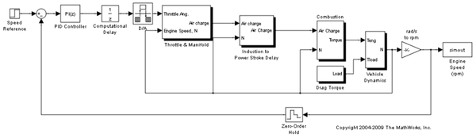
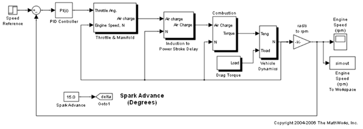
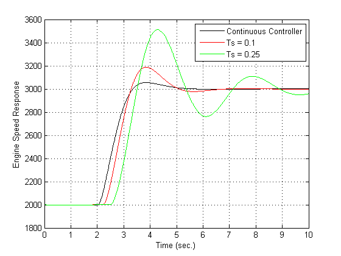
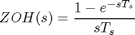
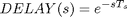
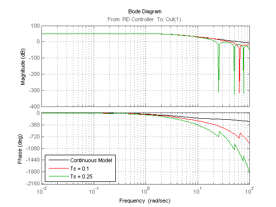
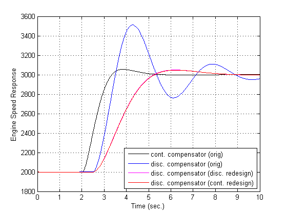

Modeling Computational Delay and Sampling Effects
Contents
Introduction
Computational delays and sampling effects can critically effect the performance of a control system. Typically, the closed-loop responses of a system become oscillatory and unstable if these factors are not taken into account. Therefore, when modeling a control system, you should include computational delays and sampling effects to accurately design and simulate a closed-loop system.
There are two approaches for designing compensators with the effects of computational delay and sampling. The first approach is to design a controller in the discrete domain to capture the effects of sampling by discretizing the plant. The second approach is to design a controller in the continuous domain. This approach is sometimes more convenient, but in this case you need to account for the effects of computational delay and sampling. In this demonstration, you apply both approaches to redesign a control system using Simulink® Control Design™.
Simulating using Discrete and Continuous Controllers
In the following example model, the initial compensator has the following gains from the compensator in the demo "Single Loop Feedback/Prefilter Design":
P = 0.0018222
I = 0.0052662
The first model has a discrete implementation of the control system.
mdl = 'scdspeed_compdelay';
open_system(mdl);
 In this model, the block scdspeed_compdelay/Computational Delay models the effects of the computational delay. The delay is equal to the sample time of the controller, which is the worst case. A zero order hold block scdspeed_compdelay/Zero-Order Hold models the effect of sampling on the response of the system. Finally, the speed controller (implemented with the PID Controller block) is discretized using a Forward Euler sampling method.
You can see the effect of the sampling by simulating the response of the system.
First, discretize the controller at Ts = 0.1:
Ts = 0.1; sim(mdl); T2 = simout.time; Y2 = simout.signals.values;
Next, discretize the controller at a increased sample time Ts = 0.25 seconds:
Ts = 0.25; sim(mdl); T3 = simout.time; Y3 = simout.signals.values;
The second model is a continuous model.
mdl_continuous = 'scdspeed_contcomp';
open_system(mdl_continuous);
 Simulate the response of the continuous model:
sim(mdl_continuous); T1 = simout.time; Y1 = simout.signals.values;
Plot the simulation of both the discrete and continuous models. Note that the response becomes more oscillatory as the sample time is increased.
plot(T1,Y1,'k',T2,Y2,'r',T3,Y3,'g') xlabel('Time (sec.)') ylabel('Engine Speed Response'); legend('Continuous Controller','Ts = 0.1','Ts = 0.25'); grid
Designing the Compensator in the Discrete Domain
To remove the oscillatory effects of the closed-loop system with the slowest sample time of Ts = 0.25, you need to redesign the compensator. First, redesign using a discretized version of the plant. You can redesign the compensator in a fashion similar to the demo entitled "Single Loop Feedback/Prefilter Design". The tuned compensator has the following gains:
P = 0.00066155
I = 0.0019118795
set_param('scdspeed_compdelay/PID Controller','P','0.00066155'); set_param('scdspeed_compdelay/PID Controller','I','0.0019118795');
Simulate the resulting closed-loop system with a sample time Ts = 0.25. You examine these results later in this demo.
Ts = 0.25; sim(mdl); Td = simout.time; Yd = simout.signals.values;
Accounting for the Delays and Sampling Continuous Time Domain
As a second approach, redesign the controller with the continuous equivalents of the unit delay and zero order hold.
Set the zero order hold dynamics

on the block scdspeed_compdelay/Zero-Order Hold by right clicking on the block and select Linear Analysis->Specify Linearization. The following block dialog opens to specify the zero-order hold dynamics.

Also, specify the linearization as a zero order hold scdspeed_compdelay/Zero-Order Hold with continuous representation. The following code is equivalent to entering these specifications into the specification dialog.
zohblk = 'scdspeed_compdelay/Zero-Order Hold'; set_param(zohblk,'SCDEnableBlockLinearizationSpecification','on'); rep = struct('Specification','(1-ss(1,''InputDelay'',Ts))*ss(0,1,1,0)/Ts',... 'Type','Expression',... 'ParameterNames','',... 'ParameterValues',''); set_param(zohblk,'SCDBlockLinearizationSpecification',rep);
Specify the linearization of the delay block scdspeed_compdelay/Computational Delay with a continuous transport delay.

Use these commands to specify the block linearization:
delayblk = 'scdspeed_compdelay/Computational Delay'; set_param(delayblk,'SCDEnableBlockLinearizationSpecification','on'); rep = struct('Specification','ss(1,''InputDelay'',Ts)',... 'Type','Expression',... 'ParameterNames','',... 'ParameterValues',''); set_param(delayblk,'SCDBlockLinearizationSpecification',rep);
The analysis of the controller design then remains in the continuous domain. Now, linearize the model with delays of Ts = 0.1 and 0.25. First, set the linearization I/O points:
io(1) = linio('scdspeed_compdelay/PID Controller',1,'in'); io(2) = linio('scdspeed_compdelay/Zero-Order Hold',1,'out','on');
Linearize the model at Ts = 0.1:
Ts = 0.1; sys2 = linearize(mdl,io);
Linearize the model at Ts = 0.25:
Ts = 0.25; sys3 = linearize(mdl,io);
Finally, linearize the model without the effects of sampling and the computational delay:
io(1) = linio('scdspeed_contcomp/PID Controller',1,'in'); io(2) = linio('scdspeed_contcomp/rad//s to rpm',1,'out','on'); sys1 = linearize(mdl_continuous,io);
You can use the linear models of the engine to examine the effects of the computational delay on the frequency response. In this case, the phase response of the system is significantly reduced due to the delay introduced by sampling.
p = bodeoptions('cstprefs'); p.Grid = 'on'; p.PhaseMatching = 'on'; bodeplot(sys1,'k',sys2,'r',sys3,'g', {1e-2,1e2},p); legend('Continuous Model','Ts = 0.1','Ts = 0.25','Location','SouthWest');
Using the model with the slowest sample time, redesign the compensator using the techinques in the demo "Single Loop Feedback/Prefilter Design". This gives the following PI Gains:
set_param('scdspeed_compdelay/PID Controller','P','0.00065912'); set_param('scdspeed_compdelay/PID Controller','I','0.001898342');
Simulate the resulting closed loop system with a sample time Ts = 0.25:
sim(mdl); Tc = simout.time; Yc = simout.signals.values;
Comparing the Responses
Plot the responses of the design. The redesign of the control system using both approaches yields similar controllers. This example shows the effects of the computational delay and discretization. These effects reduce the stability margins of the system, but when you properly model a control system you can achieve the desired closed-loop behavior.
plot(T1,Y1,'k',T3,Y3,'b',Td,Yd,'m',Tc,Yc,'r') xlabel('Time (sec.)') ylabel('Engine Speed Response'); h = legend('cont. compensator (orig)','disc. compensator (orig)', ... 'disc. compensator (disc. redesign)',... 'disc. compensator (cont. redesign)',... 'Location','SouthEast'); grid bdclose('scdspeed_contcomp') bdclose('scdspeed_compdelay')